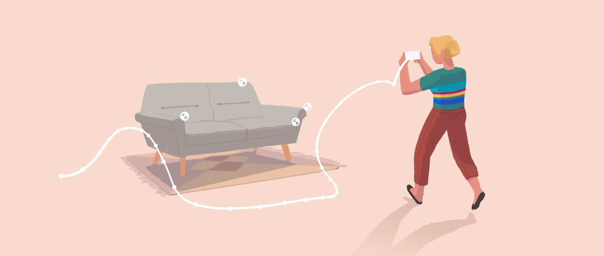

ARCore 版本进化史：Google 这八年死磕的那件事
从没有 changelog 的文档站反推 ARCore 的迭代逻辑，看运动跟踪、Depth API、Geospatial 一步步把 AR 从玩具变成基础设施的路径
我最近在翻 ARCore 的文档站，本来想找一份官方 changelog 看看版本演进——结果找了三天没找到。整个文档站几乎全是当前能力的使用指南：Depth API 的故障排查、遮挡渲染的着色器实现、Geospatial API 的配额限制……就是没有时间线。但这种"没有版本号"的呈现方式本身，反而是理解 ARCore 进化逻辑的最好切口。
现状：Android 上的 AR 事实标准
先说说现在这版 ARCore 是什么状态。作为 Google 推出的 Android AR SDK，它已经不是什么新奇实验品了——Play Services for AR 随 Android 系统分发，覆盖了全球数十亿设备。能力栈从基础的运动跟踪一路延伸到 ToF 硬件深度、Geospatial VPS 地理空间定位、Cloud Anchors 多人共享，定价结构也稳定得很克制：核心 SDK 和所有基础能力完全免费，只有云端服务（Cloud Anchors、Geospatial）按调用量计费，还给了不小的免费额度。想知道具体的免费额度和计费标准，可以去ARCore官网查最新的定价表。
但矛盾点也很明显：遮挡渲染这件事在 ToF 设备上已经能做到厘米级精度，但在没有 ToF 的单摄设备上，被动深度还是会因为纹理太少、光照不足而抖动得让虚拟物体"飘"起来。文档站里关于 Depth API 的故障排查指南占了近一半篇幅，从深度图全黑到遮挡边缘锯齿，给了从高端到低端设备的分级策略——这种细致反而暴露出一个事实：ARCore 团队现在最头疼的，就是怎么让遮挡这件事在所有设备上都能过关。
来路：从一个平面到一整座城市
样本文档没给我精确的版本号，但从功能模块的层级关系，演进路径还是能反推出来。
一切的起点是运动跟踪——SLAM 算法让手机能在空间里定位自己，没有这个就没有 AR。然后是环境理解：平面检测让虚拟物体能"放"在桌上而不是飘在空中，光照估算让虚拟物体的颜色和亮度能匹配真实环境。

再然后是 Depth API 和遮挡渲染——这是质变。之前的 AR 应用里，虚拟物体永远盖在所有真实物体上面，放的虚拟恐龙会穿过桌子腿、穿出墙壁。有了深度数据，GPU 能对比虚拟物体和真实物体的深度值，让虚拟物体出现在正确的前后位置关系上。ARCore文档里给了 OpenGL ES 的实现思路：把 Depth API 提供的深度缓冲绑定到 GPU，在渲染虚拟物体之前用真实世界的深度做遮挡测试——听起来简单，但要让这件事在不同硬件上都稳定工作，背后的调优量可想而知。文档里还给出了 Unity 里调用 Depth API 的完整代码示例，从设备检测到配置时机再到遮挡模式切换，步骤分得清清楚楚。
Cloud Anchors 让单人 AR 变成了多人共享——两个人在同一个地方打开同一个 AR 应用，看到的虚拟物体能对齐到同一个位置。再往后是 Geospatial API，把 AR 从桌面搬到了真实城市，结合 Google Street View 数据做 VPS（视觉定位系统），能在户外把虚拟物体锚定到精确的经纬度上。
定价这件事也值得单独说一句。核心 SDK 完全免费，Cloud Anchors 每月有 1 万次 host + 1 万次 resolve 的免费额度，Geospatial API 目前也是免费的，只是有请求频率限制。对于商用开发者来说，这个结构挺友好——初期不用花钱，用户量大了才按量付费，而且不收应用内分成。想尝试 ARCore 的开发者可以从下载获取最新的 SDK 包，几分钟就能跑起第一个 Demo。
规律：他们一直在死磕什么
从这些功能模块的引入顺序和文档投入来看，ARCore 团队的优先级非常清晰。
第一件事：让虚拟物体更真实地融入环境。这是一条从"看得见"到"放得下"到"挡得住"的完整路线。运动跟踪解决"我在哪"，平面检测解决"往哪放"，Depth API 解决"谁在前谁在后"。现在他们又在啃最后一公里：不同设备的深度质量差异。文档里给了从 ToF 硬件深度（±1cm 精度、有效范围 0.1m~5m）到被动深度（±5~15cm、有效范围 0.5m~3m）的详细参数对比，还给了 Unity 里按设备分级选择遮挡策略的代码示例——高端设备完整遮挡、中端简化遮挡、低端直接关闭。这种"不追求完美覆盖"的务实态度，说明他们已经想明白了：与其在低端设备上硬扛遮挡效果，不如老老实实降级。
第二件事：覆盖尽可能多的设备。文档里的设备兼容性检测做得特别细——三层检测（基础 ARCore 支持 → 特定 API 支持 → 应用自身声明）+ 运行时降级策略，甚至给了 AndroidManifest.xml 里 android:required="true" 和 android:required="false" 两种写法的选择建议。这说明 ARCore 从一开始就不是只盯着旗舰机做的，而是想让尽可能多的 Android 用户都能跑起基础 AR。
而商业层面的 Cloud Anchors 和 Geospatial，虽然重要，但都在"实验性"标签下晃了很久。定价也很克制——基础能力全免费，只在云端服务按调用计费。这种"先把体验做好，商业化不急"的节奏，和很多先收钱再做事的 SDK 形成了对比。
预判：下一步大概率是什么
从迭代规律推，我觉得 ARCore 接下来会啃两个硬骨头。
第一个是低端设备的被动深度质量。现在 ToF 硬件深度已经很成熟了，但单摄设备的被动深度还是差强人意——样本文档里也提到了"纹理太少时深度值抖动""距离太远精度急剧下降"这些痛点。Google 可能会继续优化被动深度算法，或者推动更多中低端机型搭载 ToF 传感器。
第二个是 Geospatial API 的成熟化。现在它还带着"实验性"的标签，有请求频率限制，而且文档里也明确说"未来是否会转为按量计费尚不确定"。如果 Geospatial AR 能跑起来，Google 大概率会让它脱离实验性标签，提升配额，甚至转为按量计费——毕竟底层依赖的 Google Maps 和 Street View 数据本身就是付费服务。
Instant Placement 可能继续强化。这个能让用户"放下"虚拟物体的体验已经存在了，但样本文档没给它太多篇幅，说明还有优化空间。
当然这些都是从迭代规律推的，不当官方口径传。毕竟 ARCore 这八年，团队的节奏一直很稳——不跟风，不抢风口，就是慢慢把"让虚拟物体融入真实世界"这件事做扎实。怕 Google 的文档哪天改了或者下线了，我自己整理了一份完整的能力清单和代码示例，放在 GitHub、Gitee 和 GitCode 上，国内访问的话 Gitee 和 GitCode 会快不少。